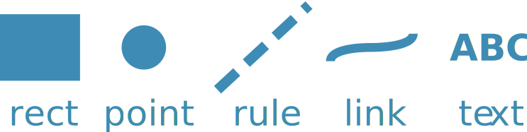

Marks¶

In GenomeSpy, visualizations are built from marks, which are geometric shapes,
such as points, rectangles, and lines, that represent data objects (or rows in
tabular data). These marks are mapped to the data using the encoding property,
which specifies which visual channels, such as x, color, and size, should
be used to encode the data fields. By adjusting the encodings, you can present
the same data in a wide range of visual forms, such as scatterplots, bar charts,
and heatmaps.
{
...,
"mark": "rect"
...,
}
Properties¶
Marks also support various properties for controlling their appearance or
behavior. The properties can be specified with an object that contains at least
the type property:
{
...,
"mark": {
"type": "rect",
"cornerRadius": 5
},
...,
}
Encoding¶
While mark properties are static, i.e., same for all mark instances,
encoding allows for mapping data to visual channels and using
data-driven visual encoding.
It's worth noting that while all visual encoding channels are also available as static properties, not all properties can be used for encoding. Only certain properties are suitable for encoding data in a meaningful way.
{
...,
"mark": "rect",
"encoding": {
"x": {
"field": "from", "type": "index"
},
"x2": {
"field": "to"
},
"color": {
"field": "category", "type": "nominal"
}
},
...
}
The schematic example above uses the "rect" mark to represent the data objects.
The "from" field is mapped to the positional "x" channel, and so on. You can adjust
the mapping by specifying a scale for the channel.
Channels¶
Position channels¶
All marks support the two position channels, which define the mark instance's placement in the visualization. If a positional channel is left unspecified, the mark instance is placed at the center of the respective axis.
Primary channels¶
x- The position on the x axis
y- The position on the y axis
Secondary channels¶
Some marks, such as "rect" and "rule", also support secondary positional channels,
which allow specifying an interval that the mark should cover in the visualization.
x2- The secondary position on the x axis
y2- The secondary position on the y axis
Other channels¶
color- Color of the mark. Affects
fillorstroke, depending on thefilledproperty. fill- Fill color
stroke- Stroke color
opacity- Opacity of the mark. Affects
fillOpacityorstrokeOpacity, depending on thefilledproperty. fillOpacity- Fill opacity
strokeOpacity- Stroke opacity
strokeWidth- Stroke width in pixels
size- Depends on the mark.
"point": the area of the rectangle that encloses the mark instance."rule"and"link": stroke width."text": font size. shape- Shape of
"point"marks. angle- Rotational angle of
"point"and"text"marks. text- Text that the
"text"mark should render for a mark instance.
Channels for sample collections¶
The GenomeSpy app supports an additional channel.
sample- Defines the track (or facet) for the sample
Visual Encoding¶
GenomeSpy provides several methods for controlling how data is mapped to visual channels. The most common method is to map a field of the data to a channel, but you can also use expressions, values, or data values belonging to the data domain.
Expect for the value method, all methods require specifying the data type
using the type property, which must be one of: "quantitative", "nominal",
or "ordinal", "index", or
"locus".
The first three types are equivalent to the Vega-Lite
types of the same name.
Field¶
field maps a field (or column) of the data to a visual channel.
{
"encoding": {
"color": { "field": "significance", "type": "ordinal" }
},
...
}
Expression¶
expr applies an expression before passing the value for
a scale transformation.
{
"encoding": {
"color": { "expr": "datum.score > 10", "type": "nominal" }
},
...
}
Value¶
value defines a value on channel's range, skipping the scale transformation.
{
"encoding": {
"color": { "value": "red" }
},
...
}
Datum¶
datum defines a value on the domain of the scale used on the channel. Thus,
the scale transformation will be applied.
{
"encoding": {
"color": { "datum": "important", "type": "ordinal" }
},
...
}